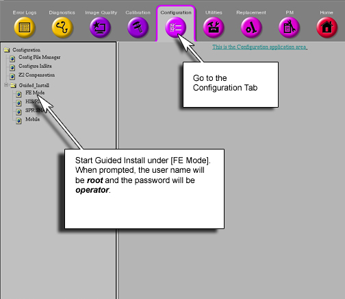

Operating Documentation
Direction 5133330-3, Rev# 14
Signa EXCITE HD 3.0T Service Methods
Module Version 1.0, Version Date 5/3/07
Operating Documentation |
| Required Persons | Preliminary Reqs | Procedure | Finalization |
|---|---|---|---|
| 1 | Not Applicable | 15 mins | Not Applicable |
| Last Update | 01/31/2005 |
| Item | Qty | Effectivity | Part# | Manufacturer | |
|---|---|---|---|---|---|
| Standard Tool Set | 1 | - | - | - | |
Go to the Service Desktop and start Guided Install. See Illustration 1.
Illustration 1: Starting Guided Install

Click on the Term Server Tab
Ensure that the MAC address for both term servers has been entered. See Illustration 2. If the second term server address is missing, see Illustration 3 for where to locate this information.
Illustration 2: Ensure That The Term Server MAC Address Is Entered In Guided Install

Illustration 3: MAC Address For HOS Term Server Can Be Found On The Small Term Server In The Systems Cabinet

| ||||
| The following two steps are CRUCIAL. Do not skip these steps! | ||||
Cycle Power on the HOS Power Supply.
At the console, reboot the entire system.
From the console, ensure that you can communicate with the HOS Term Server by following these steps:
Open a C-Shell.
At the command prompt, type: more /etc/hosts<Enter>.
Look for the IP address associated with xxx-ts2 (where xxx depends on system ID)
At the command prompt type: ping xx.xx.xx.xx (where xx.xx.xx.xx is the IP address of ts2) <Enter>.
After a few seconds , at the keyboard, press and hold the <ctrl> key down and then push the <C> key to cancel the ping. Ensure 0% loss. If there is 100% loss, see “Troubleshooting Term Server Connection”. If there is 0% loss, continue to Step 7.
In the C-Shell, type: readallcurrent<Enter>.
If the values for the z2, zx, zy, and x2y2 do not show a numerical value, then go to the section “Troubleshooting HOS Communication” If the values are numerical, proceed with HOS calibrations and, if necessary, z2ecc calibrations.
Disconnect the power from the Term Server.
Using a long, thin, non-conductive material (such as half of a toothpick), press and hold the small <Reset> button. This is the small hole on the same side of the Term server as the MAC Address sticker.
While holding the <Reset> button depressed plug in the power connector. CONTINUE TO HOLD RESET BUTTON DEPRESSED after the power is plugged in, watching the Power LED. Wait for a pattern of 1:5:1 to begin blinking. When you see that pattern then the Port server has reset. If this pattern is not seen, repeat the Troubleshooting Term Server Connection of this document.
When the pattern is seen, it will take 1-4 minutes for the device to receive and use its IP address.
Release the <Reset> button.
From the console, ensure that you can communicate with the HOS Term Server by following these steps:
Open a C-Shell.
At the command prompt, type: more /etc/hosts<Enter>.
Look for the IP address associated with xxx-ts2 (where xxx depends on system ID)
At the command prompt type: ping xx.xx.xx.xx (where xx.xx.xx.xx is the IP address of ts2) <Enter>.
After a few seconds , at the keyboard, press and hold the <ctrl> key down and then push the <C> key to cancel the ping. Ensure 0% loss.
If the command readallcurrent returns communication errors such as RS232 errors:
Verify that the connections are correct per Illustration 4:.
Illustration 4: Term Server Connections

5115767 (Term Server Kit)
5115759 - Term Server FRU.
2363597-7 - null serial cable.
5113179 - Null Serial Cable.
2378844 - Term Server to Land Hub
46-136246p11 - Velcro Hook
46-136246P12 - YD, BLK, ADH Back, Loop
46-221417P1 - Female Screw Locks
| NOTE: | It is very important that both cable 5113179 and 2363597-7 are used. |
If all connections are verified to be correct, first cycle power on the HOS Supply
At the console, open a C-shell and type: readallcurrent<Enter>.
If there are still communication errors, reboot the computer.
At the console, open a C-shell and type: readallcurrent<Enter>.
If there are still communication errors, type the following at a C-Shell prompt:
cd /var/spool/locks<Enter>.
rm rf*<Enter>.
readallcurrent<Enter>.
No finalization steps.